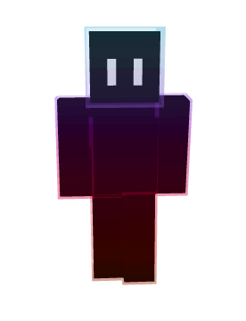

Survival
Sbíráš suroviny, vyrábíš nástroje a bojuješ o přežití.
Web o Minecraftu, ve kterém můžeš stavět, těžit a přežít noc pod růžovými stromy.
01 — About
Minecraft je sandboxová hra, ve které si můžeš postavit prakticky cokoli. Svět se skládá z kostek (bloků), které můžeš těžit, skládat a vyrábět z nich nové věci.
Hru vytvořil Markus „Notch“ Persson a v roce 2011 vyšla její plná verze. Dnes patří mezi nejprodávanější hry na světě.
02 — Game Modes
Sbíráš suroviny, vyrábíš nástroje a bojuješ o přežití.
Máš všechny bloky k dispozici, umíš létat a můžeš jen stavět.
Hraješ mapy vytvořené jinými hráči a nemůžeš libovolně ničit svět.
Jako Survival, ale máš jen jeden život. Po smrti svět končí.
03 — Mobs
Dává mléko, maso a kůži.
Dává vlnu, kterou můžeš barvit.
Objevuje se v noci a v temných místech.
Tiše se přiblíží a vybuchne.
04 — Crafting
| Item | Ingredients | Use |
|---|---|---|
| Planks | 1× Log | Základ pro většinu věcí |
| Stick | 2× Planks | Rukojeť nástrojů |
| Crafting Table | 4× Planks | Umožňuje složitější crafting |
| Wooden Pickaxe | 3× Planks + 2× Stick | Těžba kamene |
| Torch | 1× Coal + 1× Stick | Světlo proti monstrům |
06 — My Skin

Postavička s tmavým tělem, fialovo-červeným přechodem a svítícíma očima.
07 — Links